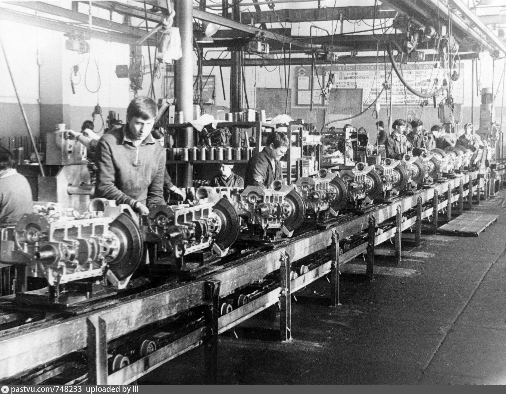
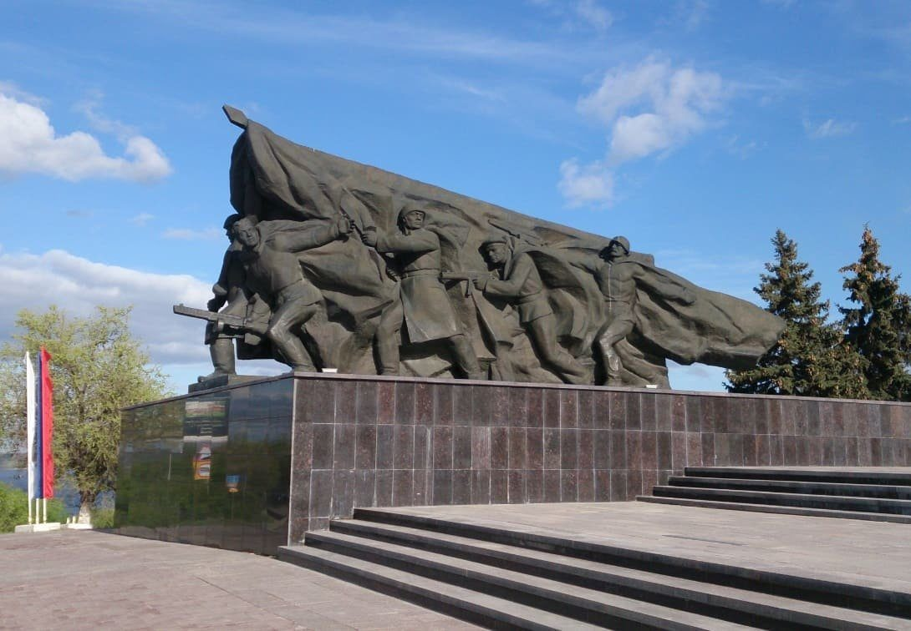
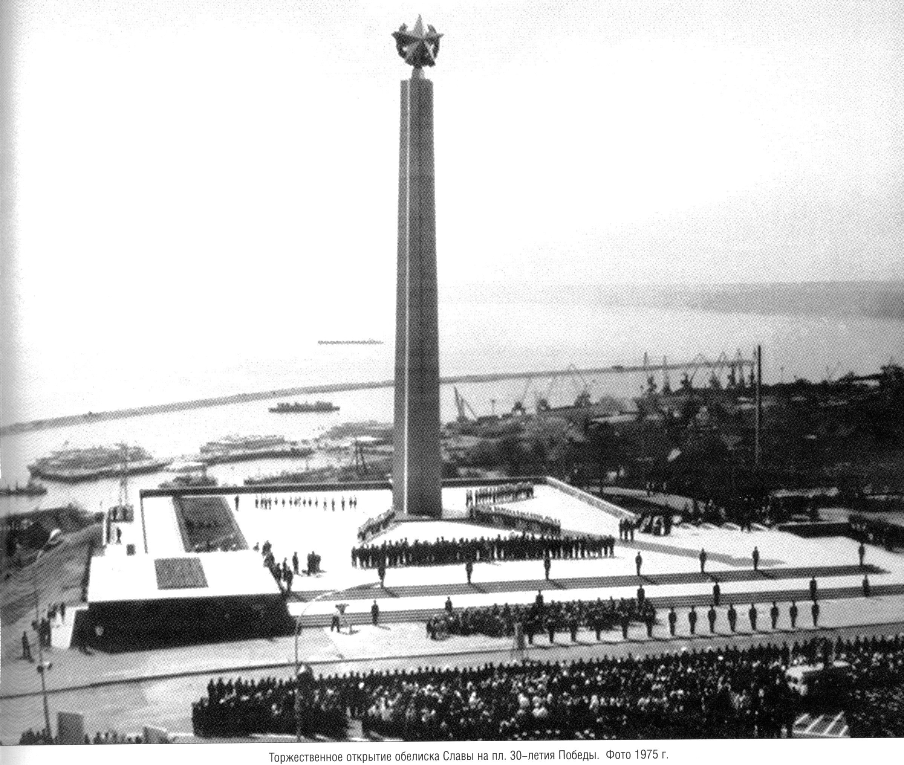

Ульяновск - город трудовой доблести.
Что такое город трудовой доблести?

1 марта 2020 года федеральным законом было установлено почетное звание «Город трудовой доблести», которое понадобилось для увековечения памяти о подвиге тружеников тыла в годы Великой Отечественной войны. Раньше городам присваивали звания «Город-герой» и «Город воинской славы», но это вызывало много вопросов от тех городов, где боевые действия не велись или велись не так усиленно, однако люди ковали Победу в тылу, работали на заводах, страдали от бомбардировок, не знали сна и отдыха, а часто и голодали. Это звание призвано восстановить историческую справедливость и почтить память о труде людей, без которых Победа была бы невозможна.
Законом устанавливается несколько оснований для присвоения статуса: государственные награды у предприятий, вручение им переходящих Красных знамен Государственного Комитета Обороны, государственные награды у работников предприятий за трудовые заслуги, документально подтвержденные факты трудового героизма жителей города в 1941 - 1945 годах. Свое заключение также должны выдать сотрудники Российской академии наук. Его нужно приложить к заявке.
Ульяновск во времена Великой Войны

Лишь за первые месяцы войны на фронт ушло 10000 человек добровольно, за все годы войны ушло боллее 39301 человека. В годы войны Ульяновск стал местом эвакуации 17 промышленных предприятий из оккупированных районов и прифронтовой полосы. Из Москвы, Витебска, Киева и многих других городов. Вскоре с 25 июня 1941 года в городе стали разворачиваться четыре госпиталя — три в зданиях средних школ (в школе № 1 — ЭГ № 1847, в школе № 16 — ЭГ № 999, в школе № 65 — ЭГ № 1645) и один в общежитие пединститута — ЭГ № 1646, и уже июле они приняли первых раненых. В дальнейшем, было организовано ещё три эвакогоспиталя (в межрайбольнице — ЭГ № 3274, в гарнизонном госпитале — ЭГ № 362). В 1942 году в Ульяновске стал работать эвакуированный из Воронежа медицинский институт, профессора которого работали во всех госпиталях и больницах города. За годы войны более 60 тысяч ульяновцев за отвагу и мужество были награждены боевыми орденами и медалями. 121 человек был удостоен звания Героя Советского Союза. 28 человек стали полными кавалерами орденов Славы. Лично Ульяновцы собрали средства на танковые колонны «Ульяновский колхозник» и «Ульяновский пищевик», эскадрильи «Родина Ильича» и «Валериан Куйбышев». Все годы войны Ульяновсцы трудились не покаладая рук, на заводах работали женщины и дети, пока мужчины воевали за нашу родину. За времена ВОВ были сшиты более 5 миллионов шинелей лишь ульяновцами. Огромное количество заводчан производили патроны. За тяжёлые годы войны здесь выпустили 5 миллиардов патронов к стрелковому оружию: для винтовок Мосина – более 2 миллиардов, для пистолетов ТТ, пистолетов-пулемётов – 2,7 миллиарда, для крупнокалиберных пулемётов ДШК – 226 миллионов, для противотанковых ружей –107 миллионов. Это 80% всех патронов, произведённых в Советском Союзе для фронта.
Что дает это звание?

В первую очередь это почетно. Присвоение звания - это определенный шаг в патриотическом воспитании. Власти уверены, что это сподвигнет людей еще больше изучать свою историю. В городе установят памятную стелу, будут проводить публичные мероприятия и праздничные салюты 1 мая, 9 мая и в день города (его в Ульяновске празднуют 12 сентября). Так же для ветеранов, детей войны и тружеников тыла это означает публичное признание их заслуг. Школьники будут изучать историю Ульяновска как города трудовой доблести на занятиях. А власти будут ответственны за более широкую работу по патриотическому воспитанию молодежи в городе. Сергей Морозов уже объяснял, что это нужно в первую очередь самим людям, чтобы никогда не было соблазна предать память и забыть о важных страницах в истории родного города.